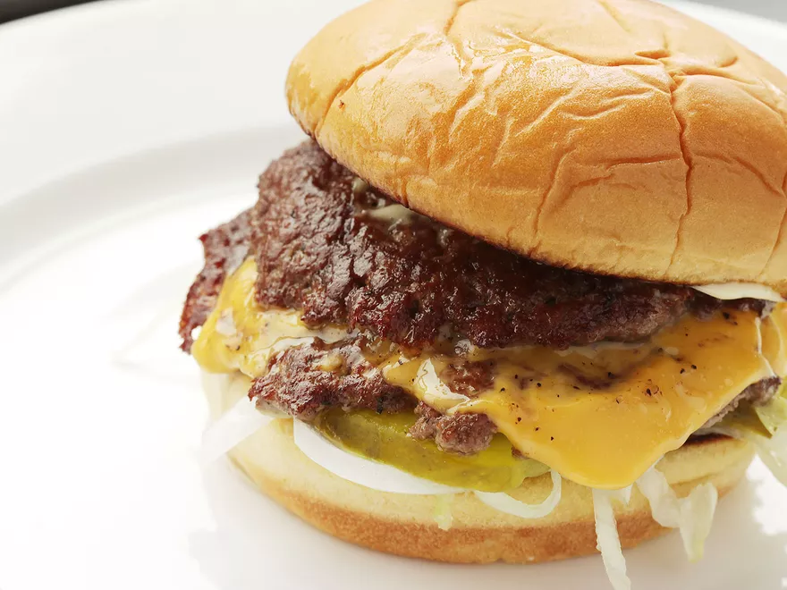

The Recipe
The Actual Recipe

Description
First of all, this website is PACKED with information. I won't even bother explaining, it is just worth the read.
Ingredients
- 1 soft hamburger roll buttered and toasted (extra points for those fancy brioche buns)
- Condiments and toppings as desired, mayonnaise (kewpie anyone??), mustard, shredded lettuce, onions, tomatoes, and pickles
- 4 oz (110g) 80/20 ground beef, divided into two 2oz (55g) balls
- Kosher salt and FRESHLY ground black pepper
- 1 slice cheese, kraft stands out.
Directions
Disclaimer: Kenji's recipe is pretty comprehensive and detailed. I will be summarizing it
- Butter and toast the bun.
- Preheat a pan over high heat for 2 minutes. Place balls of beef in pan and smash down. Smashed patties should be wider than burger bun.
- Season the top sides of the cooking patties. If you smash hard enough, the first side should take 45 seconds. Kenji uses a bench scraper, but use whatever you can to scrape the patties off the pan.
- Flip the patties and place a piece of cheese over 1 patty, or both if you like cheese.
- Once the cheese has melted, stack the 2nd patty on top of the cheese patty and place on garnished bun